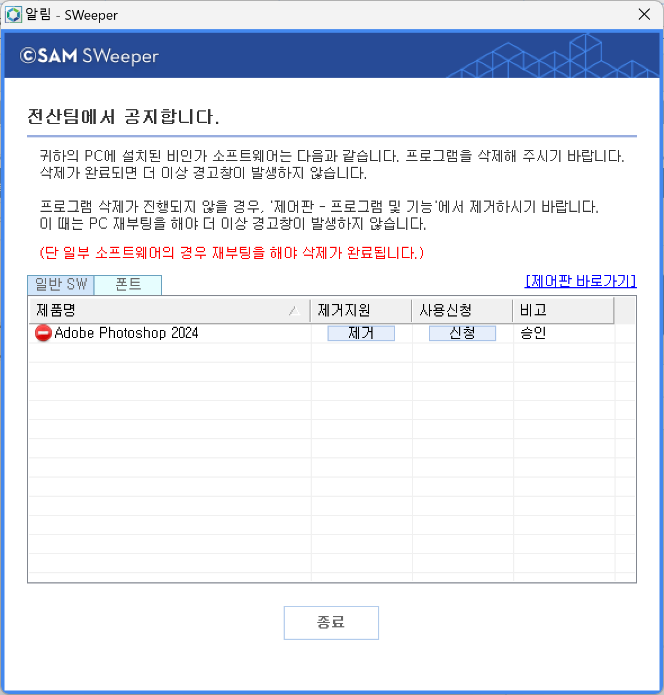
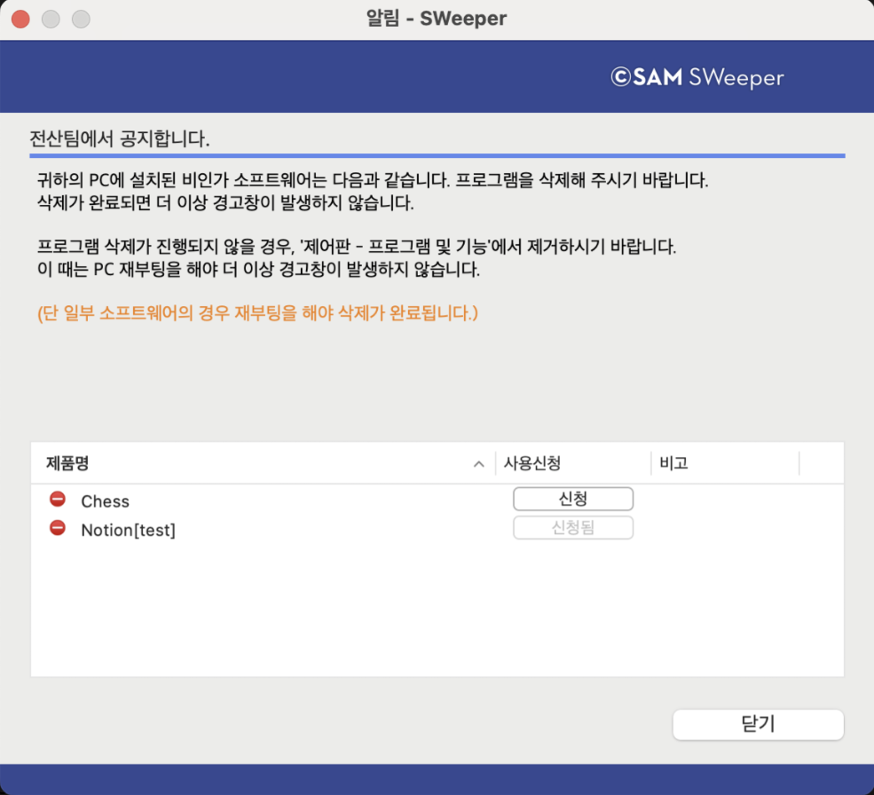

11-3-1-2-1 제거유도
11-3-1-2-1 제거유도
Source: https://www.sweeper.or.kr/etc/manual/11-3-1-2-1.html
11-3-1-2-1 제거유도
11. CLIENT UI(AGENT) ›› 11-3. 사용자 UI ›› 11-3-1. 장비정보 ›› 11-3-1-2. SW 설치정보 ››


관리자의 정책(경고메시지)에 의해 사용자 PC에서는 다음과 같은 제거유도창이 발생합니다. 이때 관리자 설정(2-1-4-1. 기본설정, 2-1-4-1-1. 제거유도 설정)에 따라 경고창 발생 빈도수가 다르게 나타나며, 경고창 메시지를 변경할 수 있습니다.
(위 : Windows Agent, 아래 : Mac Agent)


참고사항
제거유도 메시지창에서도 폰트 라이선스를 신청을 할 수 있습니다. (Windows 만)
© Copyright SWeeper Inc.. All Rights Reserved